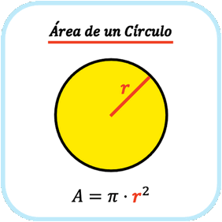

-
1. Calcular l'àrea d'un cercle (25 punts)
Donat un radi (entre 1 i 125), calcula l'àrea del cercle (π · r²), arrodonit a 3 decimals.
- Avisau a l'usuari si intenta introduir valor majors a 125 ni menors a 1.
- El cercle blau ha de crèixer en la mesura dels pixels que posi l'usuari.
(Pista, modificar un atribut de l'SVG) - El botó "Neteja" esborra el resultat, el valor introduit i posa el cercle a la mida inicial.
Àrea:
 -
2. Casino - Ruleta (45 punts)
Fes girar una ruleta que es deté en un número aleatori entre 0 i 36. L'usuari fa la seva aposta introduint un número (1-36) i la quantitat de diners.
- El botó "Gira Ruleta" es canvia per "Atura" i canvia de color de fons quan s'ha pitjat.
- El botó "Gira Ruleta" genera constantment números aleatoris entre el 0 i el 36 fins que es pitja el botó "atura"
- S'han de pintar els números parells de negre i els imparells de vermell. El 0 és verd.
- Afegeix un textarea a la dreta que mostri un historial de les apostes jugades pel usuari. Cada línia haurà de tenir el format: "- Has apostat {cantidad} € al número {numero}. Ha sortit el {resultat}. Has {guanyat/perdut}."
- El botó "Neteja" esborra el textarea, els inputs i torna a posar el botó "Gira Ruleta".
-- -
3. Carregar i mostrar dades (30 punts)
Carrega un fitxer JSON i mostra les dades en un desplegable. Quan es selecciona un element, mostra la seva imatge i la seva descripció a la dreta.
- Carrega el fitxer JSON
brainrot.jsondes de la carpeta/json/. - Quan selecciones un element del desplegable, a la dreta s'ha de mostrar la seva
imatge i la descripció.
Pista: fer servir l'índex de l'array per construir les opcions del desplegable i carregar aquest element del JSON. - El botó "Neteja" esborra el desplegable i la imatge.
- Carrega el fitxer JSON